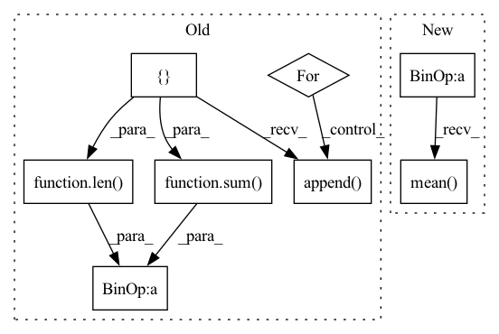

Pattern ID :17469

Before Change
weights = [0, 0, 0, 0, 0]
weights[n_gram-1] = 1
weights = tuple(weights)
self_bleu_score = []
for idx in range(len(generate_corpus)):
candidate = generate_corpus[idx]
reference_corpus = generate_corpus[:idx] + generate_corpus[idx+1:]
self_bleu_score.append(sentence_bleu(reference_corpus, candidate, weights,
smoothing_function=SmoothingFunction().method1))
return sum(self_bleu_score) / len(self_bleu_score)
Function name and function mapper.
Useful when we have to serialize evaluation metric names
After Change
return results
def self_bleu_(generate_corpus, n_grams, reference_corpus=None):
weight = [0] * max(n_grams)
weights = {}
for n_gram in n_grams:
weight[n_gram - 1] = 1.0
weights[n_gram] = tuple(weight)
weight[n_gram - 1] = 0.0
bleu = SelfBLEU(generate_corpus, weights)
scores = bleu.get_score()
results = []
for n_gram in n_grams:
score = np.array(scores[n_gram])
results.append(score.mean())
return results
In pattern: SUPERPATTERN
Frequency: 3
Non-data size: 8
Instances
Fragment ID: 57925859
Project Name: rucaibox/textbox
Commit Name: 74995b26ad538f821707a331a83f34c8559f1ed8
Time: 2020-12-03
Author: 1020139164@qq.com
File Name: textbox/evaluator/metrics.py
M Class Name: AnonimousClass
N Class Name: AnonimousClass
M Method Name: self_bleu_(3)
N Method Name: self_bleu_(3)
M Parent Class:
N Parent Class:
M File Name: textbox/evaluator/metrics.py
N File Name: textbox/evaluator/metrics.py
M Start Line: 29
M End Line: 38
N Start Line: 40
N End Line: 54
'>
Before Change
prediction = cv2.imread(fake_image)
target = cv2.imread(real_image)
error_value = []
for i in range(len(target)):
error_value.append((target[i] - prediction[i]) ** 2)
mse = sum(error_value) / len(error_value)
if mse < 1.0e-10:
return 100
psnr = 20 * math.log10(1 / math.sqrt(mse))
After Change
def evaluate_performance(img1, img2, window_size=11, size_average=True):
mse = ((img1 - img2) ** 2).data.mean()
psnr = 10 * math.log10(255.0 ** 2 / mse)
(_, channel, _, _) = img1.size()
window = create_window(window_size, channel)
'>
Fragment ID: 57925858
Project Name: lornatang/srgan-pytorch
Commit Name: cb04075c03b2a9f9b49c1e6d6edb8de1f6647249
Time: 2020-09-01
Author: liuchangyu1111@gmail.com
File Name: srgan_pytorch/utils.py
M Class Name: AnonimousClass
N Class Name: AnonimousClass
M Method Name: evaluate_performance(4)
N Method Name: evaluate_performance(2)
M Parent Class:
N Parent Class:
M File Name: srgan_pytorch/utils.py
N File Name: srgan_pytorch/utils.py
M Start Line: 31
M End Line: 45
N Start Line: 34
N End Line: 47
'>
Before Change
weights = [0, 0, 0, 0, 0]
weights[n_gram-1] = 1
weights = tuple(weights)
bleu_score = []
for candidate in generate_corpus:
bleu_score.append(sentence_bleu(reference_corpus, candidate, weights,
smoothing_function=SmoothingFunction().method1))
return sum(bleu_score) / len(bleu_score)
def self_bleu_(generate_corpus, n_gram, reference_corpus=None):
weights = [0, 0, 0, 0, 0]
After Change
def bleu_(generate_corpus, reference_corpus, n_grams):
weight = [0] * max(n_grams)
weights = {}
for n_gram in n_grams:
weight[n_gram - 1] = 1.0
weights[n_gram] = tuple(weight)
weight[n_gram - 1] = 0.0
bleu = BLEU(reference_corpus, weights)
scores = bleu.get_score(generate_corpus)
results = []
for n_gram in n_grams:
score = np.array(scores[n_gram])
results.append(score.mean())
return results
def self_bleu_(generate_corpus, n_grams, reference_corpus=None):
'>
Fragment ID: 57925862
Project Name: rucaibox/textbox
Commit Name: 74995b26ad538f821707a331a83f34c8559f1ed8
Time: 2020-12-03
Author: 1020139164@qq.com
File Name: textbox/evaluator/metrics.py
M Class Name: AnonimousClass
N Class Name: AnonimousClass
M Method Name: bleu_(3)
N Method Name: bleu_(3)
M Parent Class:
N Parent Class:
M File Name: textbox/evaluator/metrics.py
N File Name: textbox/evaluator/metrics.py
M Start Line: 18
M End Line: 25
N Start Line: 23
N End Line: 37